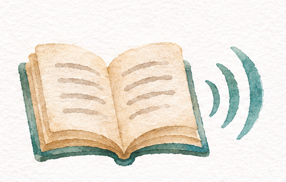

Обучение Аль-Фатихе
Выберите часть суры и повторяйте за преподавателем.
7 аятов · 8 объяснений. Седьмой аят разобран в двух частях.
Загрузка списка…
Чтение всей суры
Текст — фрагменты страницы 1 присланного Корана. Басмала — аят 1.

Выберите часть суры и повторяйте за преподавателем.
7 аятов · 8 объяснений. Седьмой аят разобран в двух частях.
Загрузка списка…
Текст — фрагменты страницы 1 присланного Корана. Басмала — аят 1.